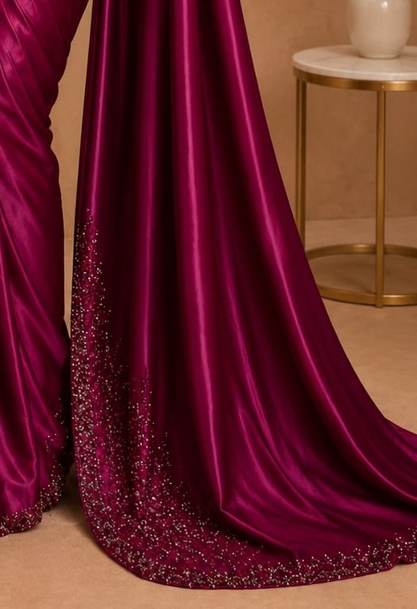
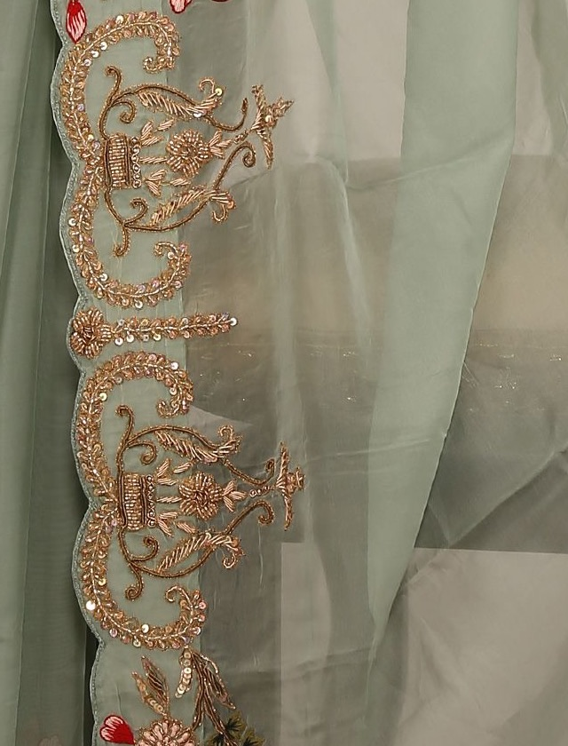
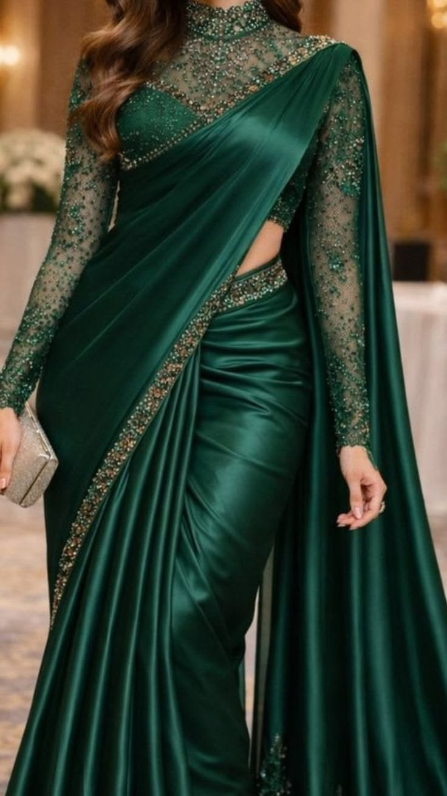
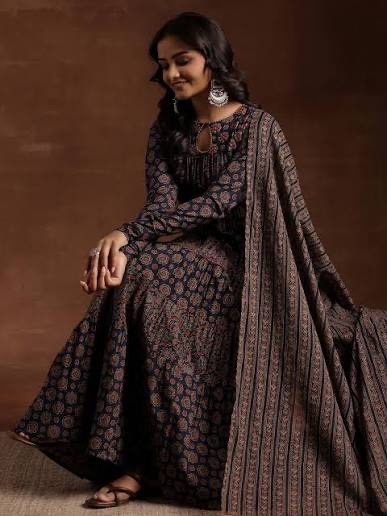
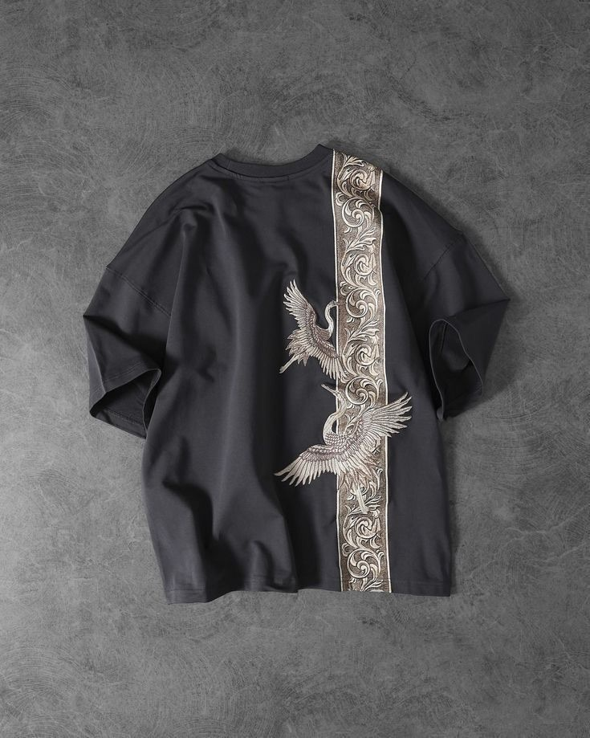
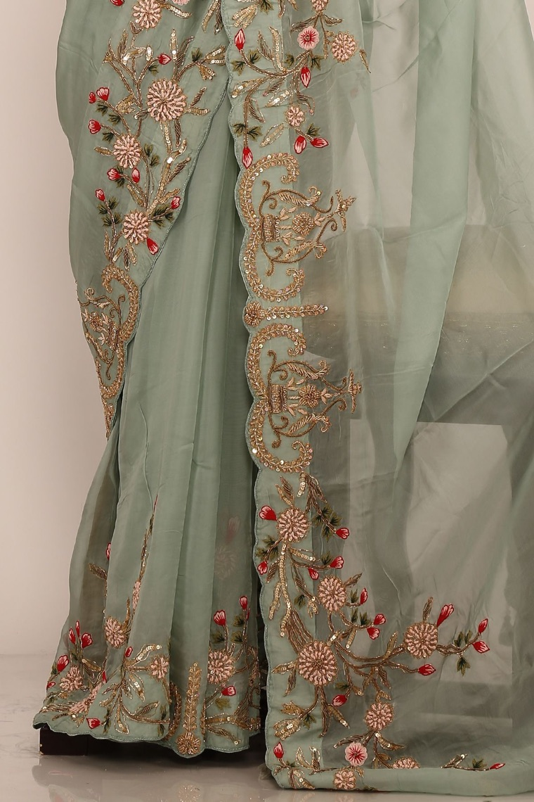
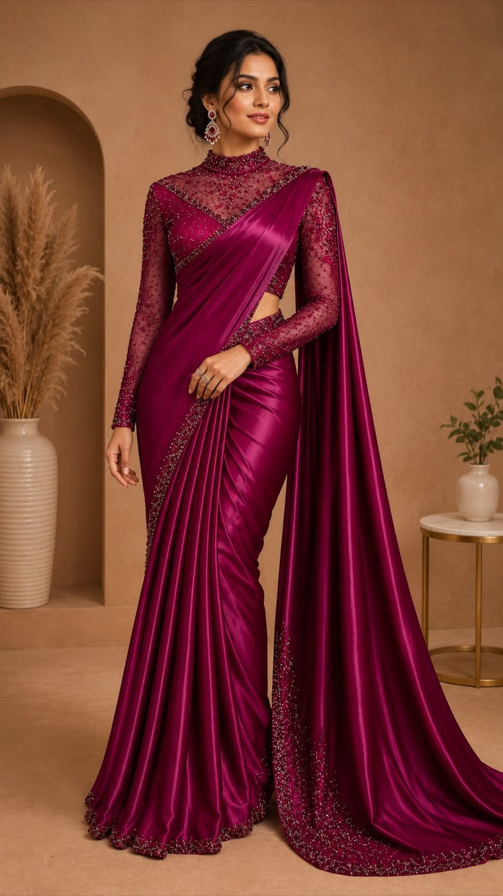
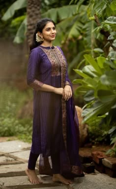
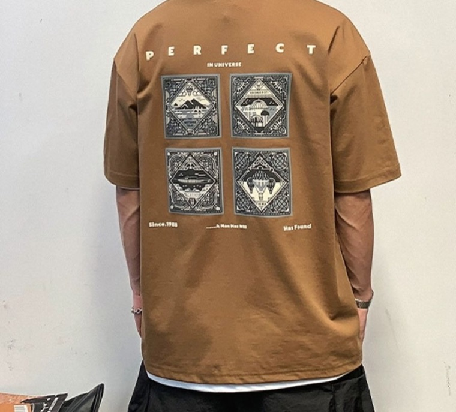
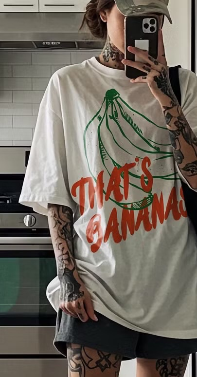

01 · Fibre
Every saree starts as a cloud.
Loose fibres, short and soft. On their own they hold nothing together.
Scroll to watch fibre become an emerald satin saree.How fibre becomes an emerald satin saree, in eight steps. Then shop sarees, churidhars and t-shirts, posted from Kanhangad, north to south.
01 · Fibre
Loose fibres, short and soft. On their own they hold nothing together.
02 · Spin
Spinning draws the fibres into one line and twists them until they grip each other. That line is yarn, and it winds onto a spool.
03 · Dye
The yarn runs through the dye bath. It goes in white and comes out emerald.
04 · Weave
The warp stands still and the weft crosses it row by row. In a satin weave one set of threads floats over four of the other and dips under one. Those long floats catch the light, and that is why satin shines.
05 · Embellish
Beads and metallic thread go along the edge and across the end of the pallu, the part everyone sees.
06 · Drape
Pleated at the waist, crossed over the shoulder, left to fall. Move the mouse to turn it.
07 · Gallery
MAGNETIQ doesn't weave. We pick finished pieces, look them over and post them from Kanhangad, north to south. The pictures on the walls are style photos.
08 · Colours
Emerald satin, magenta satin, sage organza. Not in stock yet, so ask us for the price.
Shown on every listing
Close-ups of the collection: a drawn 3D model and style photos. Every WhatsApp listing shows the actual piece in daylight photographs: the face, the back, the border close up and the length on a tape.
Satin throws light in long streaks on its face and is duller behind. Each WhatsApp listing photographs both sides in daylight, so the colour you see is the colour you get.
The cotton on sale now, shown here as a drawn pattern, not a photo. The ink shows through on the back, and a corner is soak-tested before it is listed.

Each listing says what the border is made of and whether it is hand or machine work, with a close photograph of it.

Sheer organza shows what lies under it. The length is measured with a tape, saree and blouse piece separately, and written on the listing.
Shop
Sarees, churidhars and t-shirts. Every piece is listed on WhatsApp with photographs of the actual piece.



New in
Not in stock yet. These are style photos; ask on WhatsApp for the price, the fabric, the sizes and a photograph of the actual piece.

Style photoSaree
Scalloped edge, gold metallic-thread scrolls, sequins.
Ask for price
Ask about this piece
Style photoChuridhar
A printed flared kurta with a striped dupatta.
Ask for price
Ask about this piece
Style photoChuridhar
A purple kurta with an embroidered yoke and dupatta.
Ask for price
Ask about this piece
Style photoT-shirt
An embroidered crane panel down the back.
Ask for price
Ask about this piece
Style photoT-shirt
An oversized tee with a two-colour front print.
Ask for price
Ask about this pieceSpecs
In stock: Jaipur mulmul
New collection
For both: blouse stitching in Kanhangad in 5 to 7 days, price on request; tracking on WhatsApp the day a parcel leaves; a damaged or wrong piece is exchanged.
Three promises
No customer reviews yet: the shop has just reopened. Until the first buyers send theirs, these three promises stand on every piece.
You see the face and the back before you pay. Every WhatsApp listing shows the saree from behind, the border close up. If we have not photographed it, we have not listed it.
The length is measured with a tape at home, saree and blouse piece separately, and written on the listing. Not the maker’s figure alone.
The colour is checked in daylight and photographed without a filter. Cotton is soak-tested too: a saree whose colour runs is not sold.
The MAGNETIQ team
Questions
Yes, in the new collection. Ask on WhatsApp for the sizes, the fabric and the price; each listing has photographs of the actual piece.
No. It is a satin finish fabric; each listing states the fibre.
Each listing says whether it is hand or machine work, with a close photograph of the embroidery or beading.
For the Jaipur mulmul, yes: 6.5 m in all, measured with a tape. For the new collection, each listing gives the saree and the blouse piece separately.
A corner of every cotton piece is soak-tested; one that bleeds is not sold. Satin and organza come with the care the maker gives, written on the listing.
Yes. Send your measurements on WhatsApp and a tailor in Kanhangad stitches it in 5 to 7 days. The price depends on the style, so ask before you pay.
Message on WhatsApp with the piece you want and your address. You get the payment details back, and the piece is held for you from the moment the payment is in.
Yes, north to south. Every parcel goes by courier from Kanhangad, and the tracking number comes to you on WhatsApp the day it leaves.
The parcel goes by courier and the tracking number reaches you on WhatsApp the day it leaves. Ask for a delivery estimate to your pin code when you order.
Send a photo on WhatsApp when it arrives and it is exchanged.
Anything else, ask on WhatsApp; a reply comes in the next slot.
Price
The piece in stock: the Jaipur mulmul, hand block printed cotton, 6.5 m with the blouse piece. Two pieces.
The new collection, sage organza and emerald and magenta satin, is not in stock yet. Ask on WhatsApp for prices; a piece can be pre-booked.
In the price
The saree with its blouse piece, 6.5 m in all, folded with a card.
Also in the price
Courier to your door, with the tracking number on WhatsApp.
Not in the price
Blouse stitching, 5 to 7 days in Kanhangad; the price depends on the style.
Contact
Messages are answered twice a day, in two fixed slots.